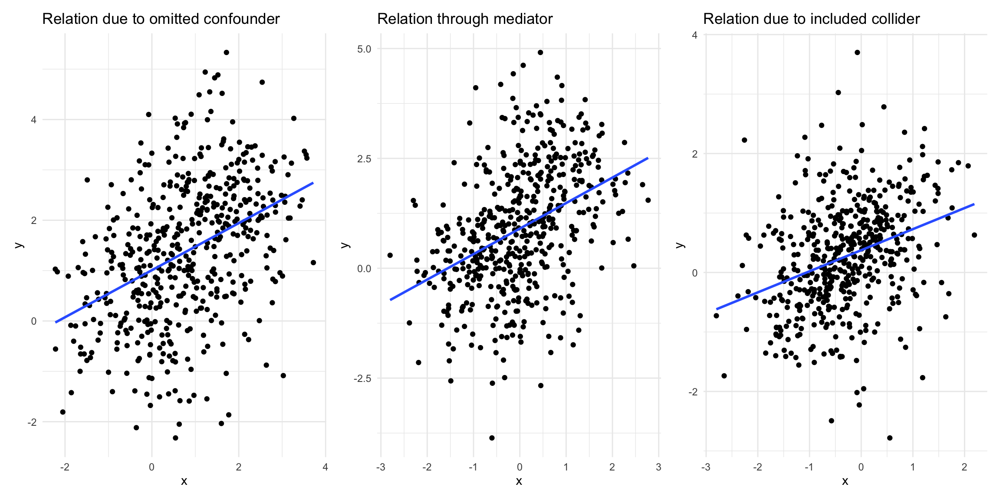
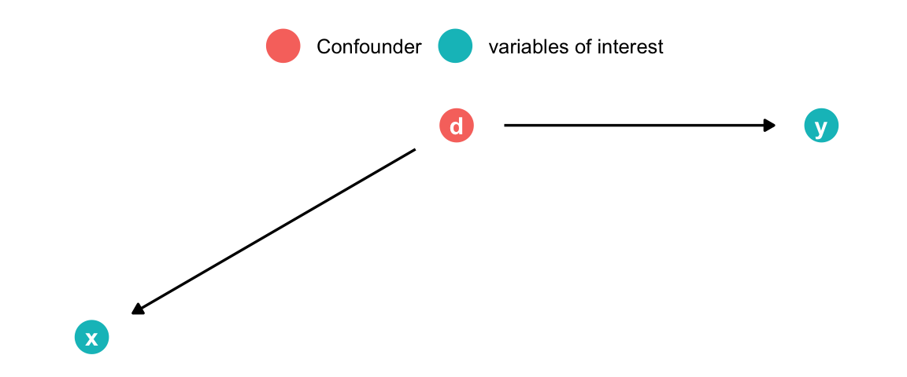
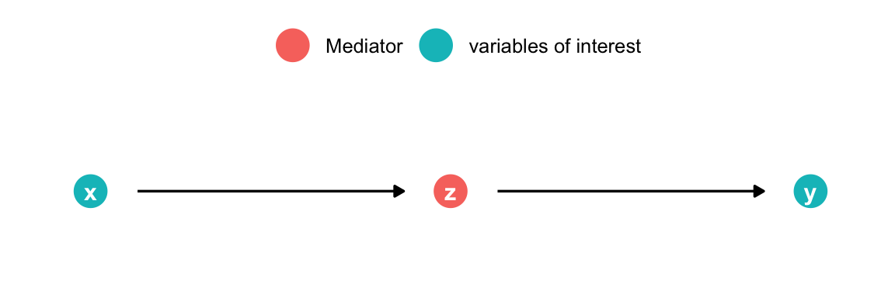
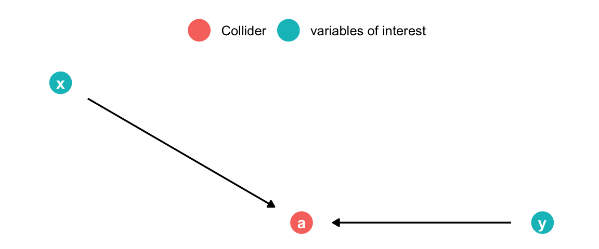
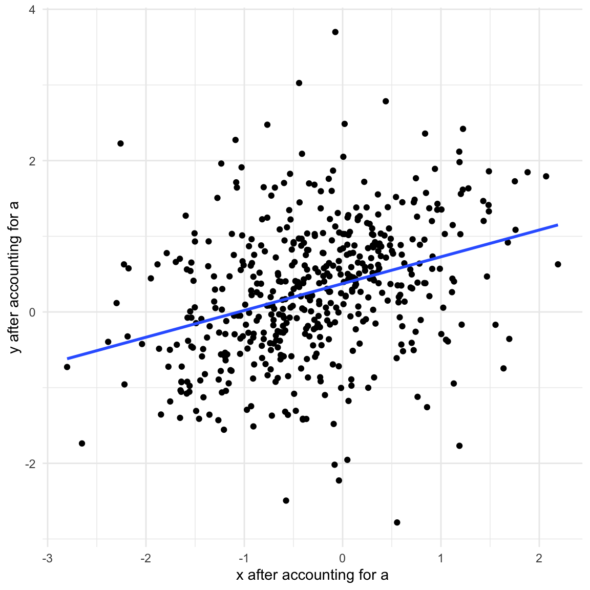
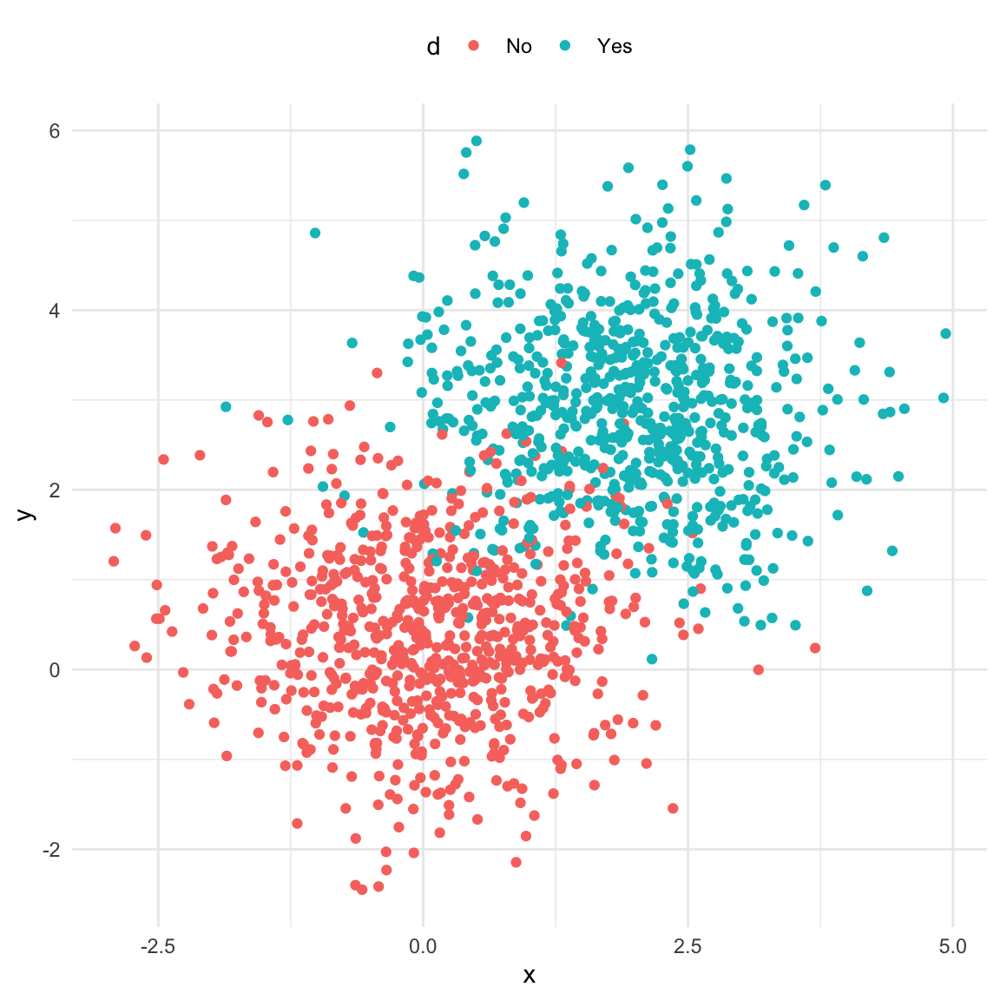
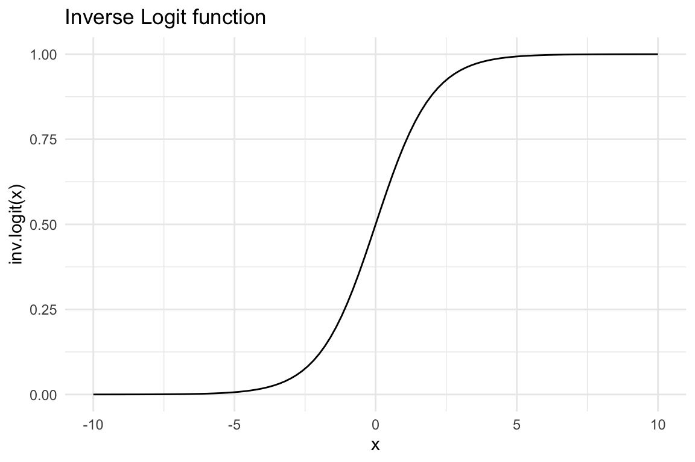
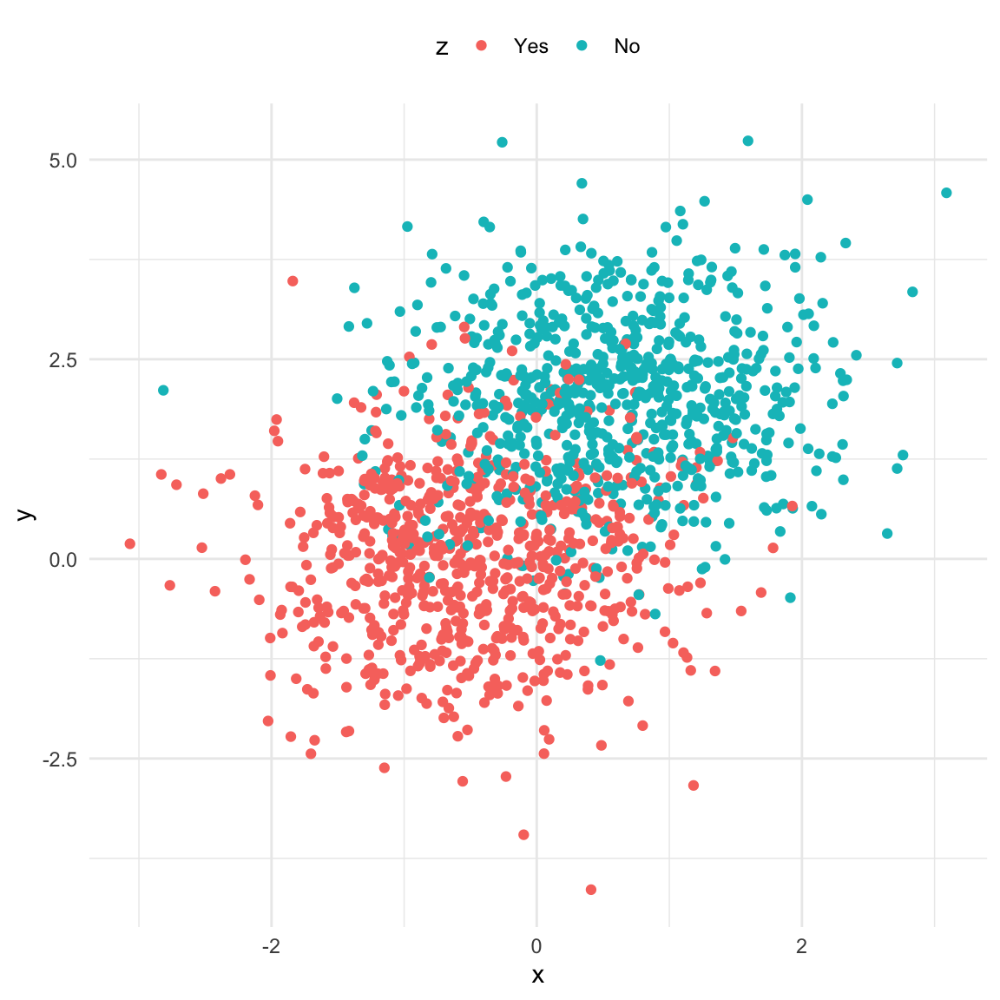
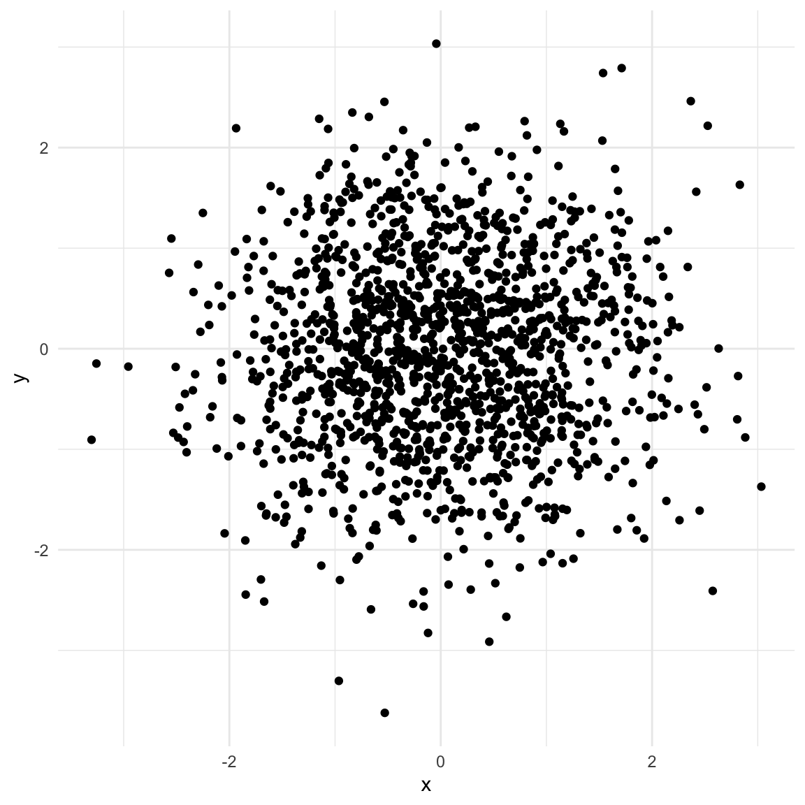
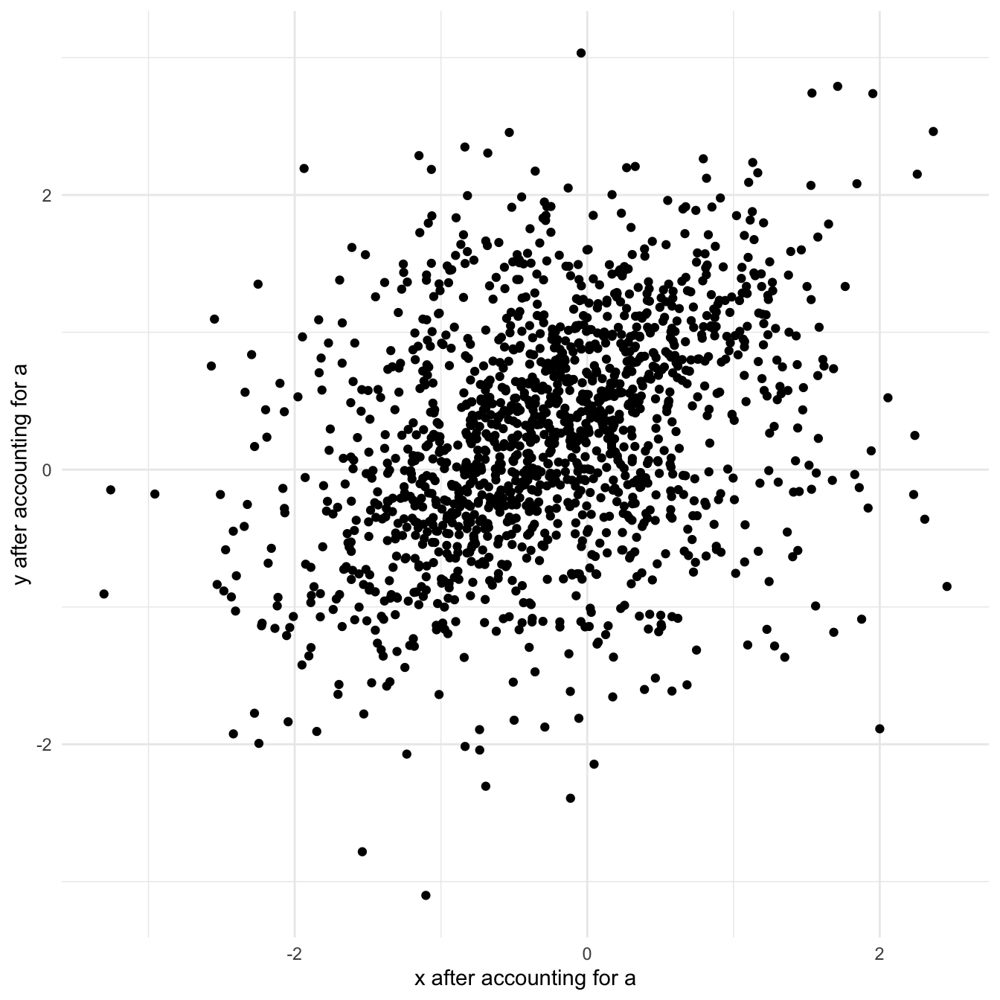

This document deals with a fundamental question of causal inference: Which variables should be included in a causal model?(see Cinelli, Forney, and Pearl 2020) To answer this question two points need to be clear:
In general each causal model only investigates the causal effect of a single independent variable, \(x_k\), on the dependent variable \(y\). The coefficients associated with all other variables, \(x_{j\neq k}\), cannot (automatically) be interpreted as causal relationships. As regression coefficients are commonly presented in a single table, it is often unclear to the reader which coefficients can be interpreted as causal (see Westreich and Greenland 2013).
Statistical significance (or any other statistical test) does not give us any idea about the causal model. To illustrate this, the following figure shows three statistically significant relationships between the variables \(x\) and \(y\) (all t-stats \(> 9\)). However, by construction there is no causal relationship between them in two of these examples. Even more concerning: In one case the exclusion of a control variable leads to spurious correlation (leftmost plot) while in the other the inclusion of the control variable does the same (rightmost plot).
library(tidyverse)library(patchwork)set.seed(11)## Fork# n ... number of observationsn <-500# d ... binary confounderd <-rbinom(n, 1, 0.5)x <-1.5* d +rnorm(n)y <-0.4+2* d +rnorm(n)data_fork <-data.frame(x, y, d =factor(d, levels =c(0, 1), labels =c("Yes", "No")))plt_fork <-ggplot(data_fork, aes(x, y)) +geom_point() +geom_smooth(method ="lm", se =FALSE) +theme_minimal() +ggtitle("Relation due to omitted confounder")## Pipeset.seed(11)x <-1*rnorm(n)z <-rbinom(n, 1, boot::inv.logit(2* x +rnorm(n)))y <-2* z +rnorm(n)data_pipe <-data.frame(x, z =factor(z, levels =c(0, 1), labels =c("Yes", "No")), y)plt_pipe <-ggplot(data_pipe, aes(x, y)) +geom_point() +geom_smooth(method ="lm", se =FALSE) +theme_minimal() +ggtitle("Relation through mediator")## Colliderset.seed(11)x <-rnorm(n)y <-rnorm(n)a <-rbinom(n, 1, boot::inv.logit(9* x -9* y +rnorm(n)))data_collider <-data.frame(x, y, a =factor(a, levels =c(0, 1), labels =c("No", "Yes")))data_collider$x_a <-resid(lm(x ~0+ a))data_collider$y_a <-resid(lm(y ~0+ a))plt_collider <-ggplot(data_collider, aes(x_a, y_a)) +geom_point() +geom_smooth(method ="lm", se =FALSE) +theme_minimal() +labs(x ="x", y ="y") +theme(legend.position ="top") +ggtitle("Relation due to included collider")plt_fork + plt_pipe + plt_collider

The Fork (Good control)
set.seed(42)library(ggdag)library(gt)library(dagitty)confounder <-dagify(x ~ d, y ~ d,coords =list(x =c(x =1, y =2, d =1.5),y =c(x =1, y =2, d =2) )) |>tidy_dagitty() |>mutate(fill =ifelse(name =="d", "Confounder", "variables of interest")) |>ggplot(aes(x = x, y = y, xend = xend, yend = yend)) +geom_dag_point(size =7, aes(color = fill)) +geom_dag_edges(show.legend =FALSE) +geom_dag_text() +theme_dag() +theme(legend.title =element_blank(),legend.position ="top" )confounder

A typical dataset with a confounder will exhibit correlation between the treatment \(X\) and outcome \(y.\) This relationship is not causal! In the example below we have a binary confounder \(d\) (Yes/No) that is d-connected with both \(X\) and \(y\) (\(X\) and \(y\) are not d-connected)
set.seed(11)# n ... number of observationsn <-500# d ... binary confounderd <-rbinom(n, 1, 0.5)x <-1.5* d +rnorm(n)y <-0.4+2* d +rnorm(n)data_fork <-data.frame(x, y, d =factor(d, levels =c(0, 1), labels =c("Yes", "No")))ggplot(data_fork, aes(x, y)) +geom_point() +geom_smooth(method ="lm", se =FALSE) +theme_minimal()
However once we take the confounder into account the association vanishes which reflects the lack of a causal relationship in this case (note that for simplicity the regression lines in the plot are not the same as the model output shown).
# options(scipen = 10)ggplot(data_fork, aes(x, y, color = d)) +geom_point() +geom_smooth(method ="lm", se =FALSE) +theme_minimal() +theme(legend.position ="top")
med <-dagify(z ~ x, y ~ z,coords =list(x =c(x =1, z =1.5, y =2), y =c(x =1, y =1, z =1))) |>tidy_dagitty() |>mutate(fill =ifelse(name =="z", "Mediator", "variables of interest")) |>ggplot(aes(x = x, y = y, xend = xend, yend = yend)) +geom_dag_point(size =7, aes(color = fill)) +geom_dag_edges(show.legend =FALSE) +geom_dag_text() +theme_dag() +theme(legend.title =element_blank(),legend.position ="top" )med

If we have a mediator in our data the picture looks very similar to the previous one. In addition, taking the mediator into account also has a similar effect: we remove the association between \(X\) and \(y\). However, in this case that is not what we want since \(X\) and \(y\) are d-connected. \(X\) causes \(y\) through \(z\) (note that for simplicity the regression lines in the second plot are not the same as the model output shown).
set.seed(11)x <-1*rnorm(n)z <-rbinom(n, 1, boot::inv.logit(2* x +rnorm(n)))y <-2* z +rnorm(n)data_pipe <-data.frame(x, z =factor(z, levels =c(0, 1), labels =c("Yes", "No")), y)ggplot(data_pipe, aes(x, y)) +geom_point() +geom_smooth(method ="lm", se =FALSE) +theme_minimal()
dagify(a ~ x, a ~ y,coords =list(x =c(x =1, y =2, a =1.5), y =c(x =1, y =0, a =0))) |>tidy_dagitty() |>mutate(fill =ifelse(name =="a", "Collider", "variables of interest")) |>ggplot(aes(x = x, y = y, xend = xend, yend = yend)) +geom_dag_point(size =7, aes(color = fill)) +geom_dag_edges(show.legend =FALSE) +geom_dag_text() +theme_dag() +theme(legend.title =element_blank(),legend.position ="top" )

The collider is a special case. There is no association between \(X\) and \(y\) as long as we do not account for the collider in the model. However, by accounting for the collider we implicitly learn about \(y\) as well (we use \(X\) as the predictor). Since the collider is caused by \(X\) and \(y\), we can figure out what \(y\) must be once we know \(X\) and the collider similar to solving a simple equation you would see in high-school.
set.seed(11)x <-rnorm(n)y <-rnorm(n)a <-rbinom(n, 1, boot::inv.logit(9* x -9* y +rnorm(n)))data_collider <-data.frame(x, y, a =factor(a, levels =c(0, 1), labels =c("No", "Yes")))ggplot(data_collider, aes(x, y)) +geom_point() +geom_smooth(method ="lm", se =FALSE) +theme_minimal()
data_collider$x_a <-resid(lm(x ~0+ a))data_collider$y_a <-resid(lm(y ~0+ a))ggplot(data_collider, aes(x_a, y_a)) +geom_point() +geom_smooth(method ="lm", se =FALSE) +theme_minimal() +labs(x ="x after accounting for a", y ="y after accounting for a") +theme(legend.position ="top")

lm(y ~ x + a, data_collider) |> broom::tidy() |>gt() |>fmt_number(columns = estimate:p.value, decimals =4)
term
estimate
std.error
statistic
p.value
(Intercept)
0.8614
0.0538
16.0142
0.0000
x
0.5328
0.0422
12.6293
0.0000
aYes
−1.6663
0.0834
−19.9822
0.0000
Connections to related concepts
Omitted Variable Bias (OVB)
Recall that variables that influence both the outcome and other independent variables will bias the coefficients of those other independent variables if left out of a model. This bias is referred to as “Omitted Variable Bias” (short OVB) since it occurs due to the omission of a crucial variable. OVB occurs whenever a confounder (see The Fork) is left out of the model. The magnitude of the bias depends on how strongly correlated the confounder is with the included variable \(x\). To illustrate this take a look at the equations representing the situation in The Fork:
\[
\begin{aligned}
x &= \alpha_0 + \alpha_1 d + \varepsilon_x \\
y &= \beta_0 + \beta_1 d + \varepsilon_y
\end{aligned}
\]
However, we might be unaware of the confounder \(d\) but still be interested in the causal effect of \(x\) on \(y\). Therefore, we might be inclined to estimate the following (misspecified) model
\[
y = \gamma_0 + \gamma_1 x + \epsilon_y
\] We know (based on the equations above) that the true effect of \(x\) on \(y\) is \(0\) as it is entirely caused by \(d\). In order to investigate the magnitude of the OVB we mistakenly view \(d\) as a function of \(x\) (see Mediation analysis):
\[
d = \theta_0 + \theta_1 x + \varepsilon_d,
\]
plug the incorrectly specified model for \(d\) into the correctly specified model for \(y\), and take the derivative with respect to \(x\):
library(stargazer)set.seed(11)d <-100*rnorm(n)x <--4+0.5* d +10*rnorm(n)y <-25+10* d +10*rnorm(n)stargazer(lm(y ~ d + x),lm(y ~ x), ## gammalm(y ~ d), ## betalm(d ~ x), ## thetatype ='html')
Dependent variable:
y
d
(1)
(2)
(3)
(4)
d
9.996***
9.997***
(0.023)
(0.005)
x
0.003
19.096***
1.910***
(0.046)
(0.173)
(0.017)
Constant
24.889***
97.282***
24.878***
7.242***
(0.488)
(8.789)
(0.456)
(0.878)
Observations
500
500
500
500
R2
1.000
0.961
1.000
0.961
Adjusted R2
1.000
0.961
1.000
0.961
Residual Std. Error
10.204 (df = 497)
195.949 (df = 498)
10.193 (df = 498)
19.576 (df = 498)
F Statistic
2,343,560.000*** (df = 2; 497)
12,212.740*** (df = 1; 498)
4,696,511.000*** (df = 1; 498)
12,242.150*** (df = 1; 498)
Note:
p<0.1; p<0.05; p<0.01
## See coef of regression y ~ xbeta1 <-coef(lm(y~d))['d']theta1 <-coef(lm(d~x))['x']beta1 * theta1
d
19.09598
Notice that without theoretical knowledge about the data it is not clear which variable should be the “outcome” and which the “independent” variable since we could estimate either direction using OLS. In the example above we know (“from theory”) that \(d\) causes \(x\) and \(y\) but we estimate models where \(x\) is the explanatory variable. As one might guess there is a clear relationship between coefficients estimated with one or the other variable on the left hand side.
To be exact we have to adjust for the respective variances of the variables:
alpha_1 *var(d)/var(x)
d
1.910091
theta_1
x
1.910091
Mediation analysis
As the total causal effect a variable \(x\) has on the outcome \(y\) can be (partly) mediated through another variable \(m\), we cannot just include \(m\) in the model. However, we can decompose the effect into a direct and mediated part. Either of part can be \(0\) but we can easily test whether that is the case. The decomposition has two parts: First, calculate the effect the variable of interest (\(x\)) has on the mediator (\(m\)):
\[
m = \alpha_0 + \alpha_1 x + \varepsilon_m
\]
Note that we use “alpha” (\(\alpha\)) for the regression coefficients to distinguish them from the parameters below. They can nonetheless be estimated using OLS.
Second, calculate the full model for the outcome (\(y\)) including both \(x\) and \(m\):
\[
y = \beta_0 + \beta_1 x + \beta_2 m + \varepsilon_y
\]
Now \(\beta_1\) is the average direct effect (ADE) of \(x\) on \(y\). That is the part that is not mediated through \(m\). In The Pipe, \(\beta_1=0\) since there is no direct connection from \(x\) to \(y\). The average causal mediation effect (ACME) can be calculated as \(\alpha_1 * \beta_2\). Intuitively, “how much would a unit increase in \(x\) change \(m\)” times “how much would an increase in \(m\) change \(y\)”. The total effect of \(x\) on \(y\) can be seen more clearly by plugging in the model for \(m\) in the second equation and taking the derivative with respect to \(x\):
\[
\begin{aligned}
y &= \beta_0 + \beta_1 x + \beta_2 m + \varepsilon_y \\
&= \beta_0 + \beta_1 x + \beta_2 (\alpha_0 + \alpha_1 x + \varepsilon_m) + \varepsilon_y \\
&= \beta_0 + \beta_1 x + \beta_2 \alpha_0 + \beta_2 \alpha_1 x + \beta_2 \varepsilon_m + \varepsilon_y \\
\text{total effect} := \frac{\delta y}{\delta x} &= \underbrace{\beta_1}_{\text{ADE}} + \underbrace{\beta_2 \alpha_1}_{\text{ACME}}
\end{aligned}
\]
Note that if we are only interested in the total effect we can omit the mediator \(m\) from the model and estimate:
\[
y = \gamma_0 + \gamma_1 x + \epsilon_y
\] where \(\gamma_1 = \beta_1 + \beta_2 \alpha_1\) (again: all these equations can be estimated using OLS). In that case we are using OVB in our favor: By omitting \(m\) its effect on \(y\) is picked up by \(x\) to exactly the degree that \(x\) and \(m\) are correlated. However, in contrast to the previous example that is exactly what we want since \(m\) is caused by \(x\) as well!
In research settings the PROCESS macro by Andrew Hayes is very popular. The following code should download and source the macro for you but will definitely break in the future (try changing the v42 part of the link to v43 or v44 etc. or obtain a new link from the website if it does):
temp <-tempfile()download.file("https://www.afhayes.com/public/processv42.zip",temp)files <-unzip(temp, list =TRUE)fname <- files$Name[endsWith(files$Name, "process.R")]source(unz(temp, fname))unlink(temp)
Alternatively download the program from here and source the process.R file manually.
PROCESS model 4 (not run):
process(data.frame(Y, X, M), y ='Y', x ='X', m ='M', model =4)
Appendix: How the sausage is made
The fork, mediator, and collider were generated as binary variables to make visualization easier. Binary variables can be drawn from a so-called Bernoulli distribution which is a special case of the binomial distribution with size = 1. The distribution takes the probability of getting a \(1\) as input.
The Fork
## Make code reproducibleset.seed(11)## Number of observationsn <-1500## Random draw from Bernoulli with p(1) = 0.5, p(0) = 0.5d <-rbinom(n, 1, 0.5)## X is caused by dx <-2* d +rnorm(n)## y is caused by dy <-0.4+2.5* d +rnorm(n)fork <-data.frame(x, y, d =factor(d,levels =c(0, 1),labels =c("No", "Yes")))ggplot(fork, aes(x, y, color = d)) +geom_point() +theme_minimal() +theme(legend.position ="top")

The Pipe
## Generate random Xx <-rnorm(n)## inv.logit ensures that values are between 0 and 1ggplot(data.frame()) +stat_function(fun = boot::inv.logit, xlim =c(-10, 10)) +theme_minimal() +labs(title ="Inverse Logit function", x ="x", y ="inv.logit(x)")

## z is caused by Xz <-rbinom(n, 1, boot::inv.logit(2* x +rnorm(n)))## y is caused by zy <-2* z +rnorm(n)pipe <-data.frame(x, y, z =factor(z,levels =c(0, 1),labels =c("Yes", "No")))ggplot(pipe, aes(x, y, color = z)) +geom_point() +theme_minimal() +theme(legend.position ="top")

The Collider
## Generate random xx <-rnorm(n)## Generate random yy <-rnorm(n)## a is caused by both X and ya <-rbinom(n, 1, boot::inv.logit(9* x -9* y +rnorm(n)))collider <-data.frame(x, y, a =factor(a,levels =c(0, 1),labels =c("No", "Yes")))ggplot(collider, aes(x, y)) +geom_point() +theme_minimal()

In order to get the partial correlation of \(X\) and \(y\) after accounting for \(a\) we first regress both \(X\) and \(y\) on \(a\) and use the unexplained part (residual) in the plot. This is equivalent to a regression that has both \(X\) and \(a\) as explanatory variables.
collider$x_a <-residuals(lm(x ~0+ a))collider$y_a <-residuals(lm(y ~0+ a))ggplot(collider, aes(x_a, y_a)) +geom_point() +theme_minimal() +labs(x ="x after accounting for a", y ="y after accounting for a")

References
Cinelli, Carlos, Andrew Forney, and Judea Pearl. 2020. “A Crash Course in Good and Bad Controls.”SSRN 3689437.
Westreich, Daniel, and Sander Greenland. 2013. “The Table 2 Fallacy: Presenting and Interpreting Confounder and Modifier Coefficients.”American Journal of Epidemiology 177 (4): 292–98.